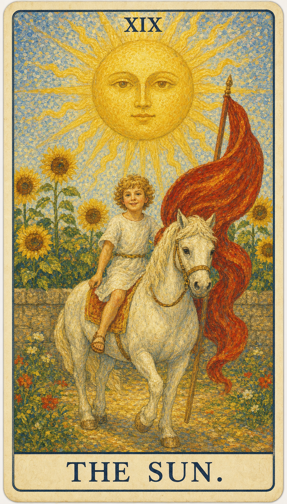

— 貳 · CORRESPONDENCES
对应要素Esoteric Correspondences
- 元素 Element
- 火喜悦、成功、清晰、生命力
- 星座 / 行星
- 太阳喜悦、成功、清晰、生命力
- 生命之树 Tree of Life
- Resh路径与此牌的精神功课相连
- 希伯来字母
- Resh（头）通过喜悦理解当前阶段的命运功课，让生命力与真实的自我重新照亮道路


太阳是生命喜悦的象征，是清楚、温暖与生命力的源泉，万物因它而生。它让隐藏的事物显现，也让人重新感到简单、直接与快乐。金色的太阳散发出二十一道光芒，象征除愚者之外的二十一张大阿尔卡那牌。
← 返回大厅 / 选择其它卡牌太阳是生命喜悦的象征，是清楚、温暖与生命力的源泉，万物因它而生。它让隐藏的事物显现，也让人重新感到简单、直接与快乐。金色的太阳散发出二十一道光芒，象征除愚者之外的二十一张大阿尔卡那牌。
当这张牌出现，说明你正遇到“喜悦、成功、清晰、生命力”的课题。它既可能表现为外部事件，也可能是内心正在成熟的一个阶段。太阳牌的解读相对单纯，几乎可以用一个字概括——“吉”：无论问及何事，答案大多吉利。而吉利的根源在于当事人自身：性格开朗、心态积极、待人友善、言谈活泼，和这样的人在一起，仿佛阳光普照、温暖无比。周围的人都愿意亲近他，他的身价自然上升，好事也接踵而至。不过太阳与星星、月亮一样，有时只反映当事人的主观感受而非客观事实——这组高悬天际、人类难以企及的星体，其形而上与心理的意义，往往大于现实的意义。值得一提的是，太阳牌还藏着一层鲜为人知的古老含义“同性之爱”：早期塔罗的太阳牌曾绘有两个男孩并立，由此引申出兄弟般的、亲情友情乃至爱情的情谊。
一名满面童真、笑容灿烂的孩子骑在马背上，从灰色的围墙中跃然而出，预示着解脱束缚、向自由前进。孩子头戴雏菊花环，插着一根熟悉的红色羽毛——那与愚者、死神头上的羽毛一模一样，据说象征超越死亡与新生。灰墙之后，金色的向日葵簇拥而生，如同一座人造的花园；但孩子并不偏爱这人工的美景，而是追逐毫无修饰的自然世界，就像他裸露的身体一样真实、自然、纯真。太阳下方的四朵向日葵代表四元素，也代表四张牌主；它们都面向孩子而非太阳，仿佛在说：纯净、自然、真实的个体凌驾于太阳之上，是一种远超权力与财富的境界，也是快乐的源泉，正如孩子脸上洋溢的喜悦。
通过喜悦理解当前阶段的命运功课，让生命力与真实的自我重新照亮道路
太阳表示人事物的发展正处在后期阶段。正逆位的区别，在于能否度过这个后期：度过了，便收获相应的奖励并圆满中止；度不过，则未能得偿而中止。换言之，太阳的“吉”大多已水到渠成，关键只在最后这一程能否善始善终。

孩子骑白马，太阳高照，向日葵盛开，画面天真明亮。
象征生命力、活力、成功与驱动力，它的光芒照亮道路，带来清晰与认识。
代表前进与胜利，骑在马上象征对自己行动的控制与决断力。
行动、能量与激情的象征，揭示积极主动、自信的态度。
代表力量、忠诚与坚韧不拔的精神；骑士驾驭它，表明对力量的掌控与运用。
常与太阳相连，象征敬仰与忠诚；朝向太阳也象征成长与积极向上。
白色代表纯洁与精神上的显著提升，以及正直、高尚的品质。
常象征障碍或将要克服的挑战，此处远在天边，暗示那些挑战已被克服。
过去的限制或约束，如今因成长与了悟而不再是障碍。
深黄或橙色的地面代表丰盛而稳固的基础。
孩子轻松愉悦地骑行，表示他在旅程中感到自信与享受。
地面上的花朵象征美与丰盛。
太阳放射出直线与波浪线，代表阳性能量与生命的温暖。
太阳高挂天空，象征启迪与普遍的真理。
被视为一种特别的吉祥象征，表示正在发生的事有着格外好的吉兆。
象征成就与成功，置于太阳的中心，是复兴与精神活力的标志。
对应此阶段在人生旅程中的功课。
数字 19 是 1 与 9 的组合，约化为 1+9=10，再化为 1（魔术师）——它既是一段旅程的圆满收束，又预示着以全新姿态回到起点。它紧随月亮的迷雾之后，象征夜尽天明、阳光重新洒满大地。19 指向经验累积后的转折与整合，引导人从事件表层进入更深的精神功课。
在解读时，太阳提醒我们：事件表面的顺逆终会变化，真正值得把握的是牌面所揭示的内在功课。真正的喜悦不来自权力与财富，而来自像孩子一样真实、自然地活着。

正位的太阳表示这股能量正以最明亮的方式照耀着。它的提示语是：喜悦的心情、决定的明确、成功的达成、生活的丰富、活力的展现、潜能的发挥、光明的前景、幸运的降临、积极的态度、希望的照耀。顺着牌面主题行动，尽情发挥这股正能量，事情会显露出可被把握的方向。
成功，快乐，清晰，活力，公开，丰盛，自信，好消息，远景明朗，活力充沛，欲望强烈，得贵人相助，阳光普照，积极，享乐，乐趣，温暖，热情，友情，胜利，发财，成名，激情，幸福，生命力
火 · 喜悦、成功、清晰、生命力
感情中，太阳代表关系进入与“喜悦、成功、清晰、生命力”有关的阶段：彼此恩爱有加、得到亲友的祝福、梦中情人出现、恋情公开，乃至步入婚礼殿堂。这是一段明亮而稳定的关系，两人相互欣赏、感情日渐亲密。单身者会被开朗温暖、阳光积极的人吸引；有伴侣者则可以围绕信任、诚实的交流与共同的幸福，进行更成熟的沟通。
事业学业上，太阳提示你正处在实力充分发挥、目标顺利达成的高光时期：积极主动、得遇名师、贵人相助，工作顺利、前途明朗，学业上积极上进、成绩快速进步、考试顺利。它鼓励你尽情施展才能，去实现心中的理想目标。
人际关系中，太阳象征深厚的情谊与日渐亲密的交往——你在朋友间很受欢迎，待人真诚，知心好友众多，彼此尊重、乐于助人。财富方面则财运壮盛、储蓄增加，甚至有意外之财。这是适合投资的时机，看准目标后不要迟疑。
健康生活上，太阳提示身心状态与当前的心理课题相连，是一张充满生命力的牌。它象征旺盛的精力、开朗的心境与良好的身体状态，适合多进行户外活动、呼吸新鲜空气来愉悦心情，也常与怀孕、新生命的喜讯相关。适合趁这股阳气充足的时机调养身心、培养健康的作息，让生活更加充实——同时也要避免因过度自信而忽视身体偶尔发出的小信号。
适合户外活动，呼吸新鲜空气可以愉悦心情，怀孕，生活充实。若问具体事件，正位多表示事情进入一个明朗、丰收的关键阶段。主动去理解它的意义、把握这股正能量，会比单纯等待结果更有力量。

逆位的太阳表示这股能量受阻、失衡或被错误使用，光被云层遮住了一部分。它的提示语是：低落的情绪、困扰的问题、幸运的缺失、疲惫的身心、困境的陷入、活力的缺乏、失望的情绪、悲观的想法、挫败的感觉、压力的累积。此时最重要的是先看清自己是否正在抗拒这张牌所要求的功课——阳光并未消失，只是暂时被遮蔽，需要你重新找回内在的热度。
快乐受阻，过度乐观，延迟成功，疲惫，虚荣，幼稚，意志消沉，约会取消，情绪低落，事事无法持久，性格不开朗，感到无助，生活不稳定，孩子气，消极，慵懒，冷漠，失落，困惑，失真，失败
火 · 受阻、延迟、反复与失衡
感情中，逆位的太阳常表现为因冲动致使感情破裂、迟迟无法步入婚姻、有分手的危险，或一段不被祝福的恋情、婚约的取消。它提示感情容易出现冷淡、疏远、争吵或忽视对方感受的状况。关系若一直无法推进，需要回到双方真实的需求，重新点燃彼此的热情与理解。
事业学业上，逆位的太阳常表现为听不进劝诫、对工作和学业缺乏耐心、原定计划无法实施，或后劲不足、厌学、成绩低落、目标不明确。它提示你可能遭遇瓶颈或一时的停滞。先修正方向、补足信息，全力以赴去克服困难，再决定下一步。
人际方面要小心投射与不公平的交换。逆位的太阳常表现为因爱慕虚荣而增加开支、被同伴排挤、与旧友绝交，或给人消极猥琐之感、令人难以亲近。财富方面则收入下降、奢侈浪费，运势在逐渐走低。适合回到理性评估与长期规划，避免被虚荣与恐惧推着走。
健康上，逆位的太阳常提示活力的减退、身心的疲惫与情绪的低落，热情仿佛被压力一点点耗尽。性格趋于孤僻，做事难以持久，容易陷入慵懒与冷漠。建议不要让消极情绪占据主导，减少极端的自我消耗，主动去寻找能重新点燃内在激情与活力的方式——晒晒太阳、动一动身体，给生活重新注入光与热。
对人和事物都难以持久，被迫外出，性格孤僻，生活窘迫。事情可能延迟、反复或暴露隐藏问题——先修正模式，再谈结果。

当太阳出现在三牌阵中，它提示你从时间维度观察这股能量：过去留下的结构、现在显现的课题，以及未来需要整合的方向。点击下方卡牌揭示隐秘启示。
可能曾有一段快乐而成功的时期，为当前的局面奠定了基础，你积累的经验与知识正为眼下的成长带来好处。
是一个充满活力与机会的时刻，你可能正享受生活的乐趣，也看到了成功的可能；太阳鼓励你善用这股正能量，采取行动去实现梦想。
可能带来更多的成功与成就，继续保持积极的态度与行动力，会带来更大的快乐与满足，前景光明。